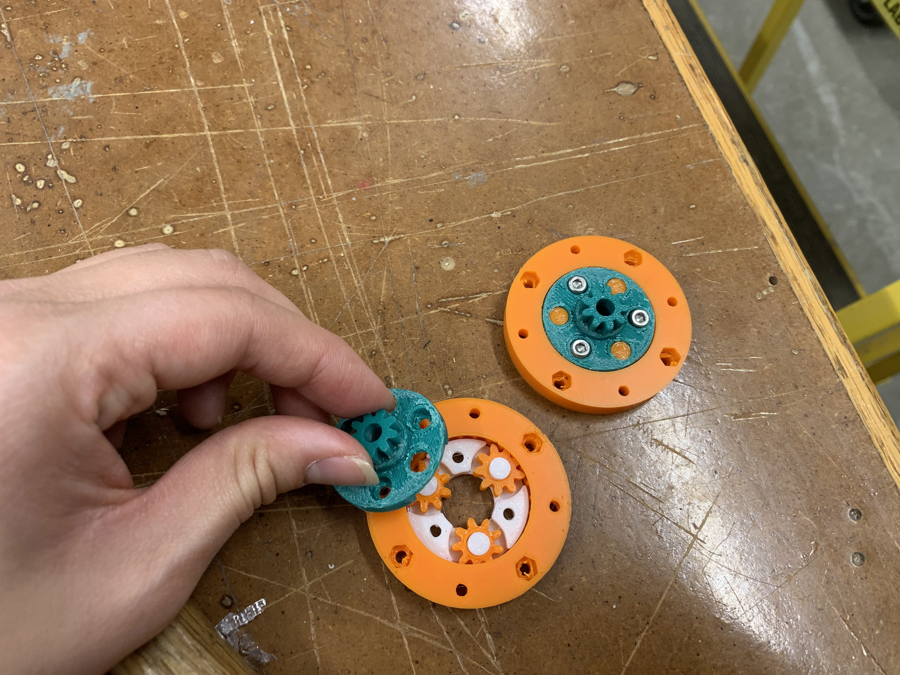

<br>
# Final Project Documentation: Punchy McPunchface
For my final project, I was particularly interested in [this](https://www.uncommongoods.com/product/mechanical-music-box-set) music box, which runs off of punched cardstock instead of playing a set song, so you can customize the tune. The goal is to create a machine that will automatically punch the holes needed for this music box. Usually, you have to hand-punch every single note, which is both a pain and difficult to do precisely due to human error. I want to create a machine that does this automatically. I have officially named my machine Punchy McPunchface. Here's my final project [video](https://youtu.be/L07CEHaLAlw), and read on for the journey that Punchy was. I didn't include all the issues I ran into throughout this project because then this page would go on at least twice as long, but I will say I put my literal blood (accidentally poked myself with a couple wires, oops), sweat, and tears into this project. I am proud of what I was able to accomplish and what I learned throughout the process, even if it wasn't perfect. Thanks to the entire PS70 team for a wonderful semester full of tons of learning!!
I planned for Punchy to have 3 components:
<ul>
<li>The roller, which will move the paper forward</li>
<li>The puncher, which will actually punch the hole in the paper</li>
<li>The slider, which will move the puncher side to side</li>
</ul>
You can see these components in this diagram. Unfortunately, my drawing skills are not up to snuff, but I labeled everything to make it as clear as possible. I'm envisioning a box, which will hopefully eventually be made of sheet metal, but will be cardboard as I prototype. The back half of the box will be a cylinder holding extra paper (think like a roll of butcher paper) plus the punching mechanism and slider. The front half of the box will be the roller mechanism to move the paper forward.
<img src="./Sketch.jpeg" alt="Sketched diagram" width="350"/>
You can see the initial documentation for my initial progress on the roller and puncher components on my Week 11 [page](./011_week11/index.html), when the assignment was to make an MVP. Essentially, on that page, you can see how I got the roller to a semi-functional place, then struggled with a rack and pinion mechanism and decided to scrap it. Continue reading this page for all my progress to date, and see directly below for a materials list. If you want to make this project, just gather all the materials and check out the photos to see where everything goes.
##Materials List
<ul>
<li>6 mm plywood</li>
<li>3 NEMA 17 stepper motors, one with a timing belt attachment</li>
<li>Arduino Uno microcontroller</li>
<li>3 L9110 motor drivers</li>
<li>Wire, pin-pin wires, and wire strippers</li>
<li>3 M3x55 screws</li>
<li>1 M5x20 screw and 2 M5 nuts</li>
<li>Lots of 3D printed parts, which you can get from all STLs linked in this page, or download a zip file with all the STLs + DXF for laser cutting housing <a download href='./AllFiles.zip'>here</a></li>
<li>1 4.2 mm diameter steel rod</li>
<li>1 5 mm diameter wooden dowel</li>
<li>2 ball bearings</li>
<li>Timing belt</li>
<li>Pulley for timing belt</li>
<li>1 limit switch</li>
<li>Music box [kit](https://kikkerland.com/collections/music-box/products/make-your-own-music-box-kit), which includes the hole punching bit</li>
</ul>
##Roller
The roller was in a semi-functioning place after MVP week. I created a quick cardboard housing and you can see it rolling a piece of vinyl forward below:
<video width="750" height="420" controls>
<source src="WorkingRoller.MOV">
Your browser does not support the video tag.
</video>
I knew I also needed a roll in the back to hold the strip of paper, kind of like how a roll of butcher paper or plastic wrap lets you roll the product off of it in an orderly manner. The easiest thing I could think to do was model two concentric cylinders: one in the center and one that was just a millimeter larger and wrapped around the center cylinder. Basically, the idea is that the center cylinder stays stationary while the outer cylinder can freely rotate with the small amount of clearance it has.
After changing some of the other aspects of the design and testing, I concluded that I needed a mechanism to support the paper roller. The roller also needed to be a bit bigger because the dowel holding the wheels was bumping into the motor. I made the roller bigger and created a support bracket, which you can download <a download href='./PaperRollerAndSupport.stl'>here</a> and see below:
<iframe src="https://college415.autodesk360.com/shares/public/SH9285eQTcf875d3c539ad4ae096a436e3e7?mode=embed" width="640" height="480" allowfullscreen="true" webkitallowfullscreen="true" mozallowfullscreen="true" frameborder="0"></iframe>
I also concluded that I would need to change the paper holder (in the back of the machine, holding the spool of paper) to accommodate the slider. I just made it a smaller cylinder that would spin freely on a 4.2 mm steel rod, and you can download it <a download href='./BackPaperRoller.stl'>here</a>.
When I put everything together, the support bracket was pushing up too much against the wheels, so I wound up ditching it. However, some fine-tuning of the hole for the dowel holding the wheels would fix this issue.
##Puncher
I began with a rack and pinion mechanism, with the idea that a stepper motor would spin the pinion, which would move the rack in the z direction. I'd attach something sharp to the rack and hope that it punched holes in the cardstock. I started by drawing a rack and pinion mechanism using [this](https://www.youtube.com/watch?v=khG4Zk5XZrw) excellent tutorial (be sure to reference the comment by Nicholas Halderman, which includes updated parameter information for the current version of Fusion). I then designed a top and bottom plate to contain the rack and pinion. The plates had a track to keep the rack in place: I made this by adding a half-cylinder to each plate and cutting a half-cylinder out of each side of the rack.
It was at this point that I chatted with Nathan, who recommended I actually do some hole punching tests. I'm glad I did, because I quickly found that the cardstock was incredibly difficult to punch a hole through. All manual hole punches have long lever arms, so they have a lot of torque. I found it basically impossible to punch any kind of passable hole, even while holding the paper taut. This is exacerbated because the cardstock is quite thick and strong. Additionally, the music box's mechanism is pretty sensitive, so I don't think it'll work if I just punch through the material (which just displaces the material and leaves a bunch of debris) as opposed to cleanly cutting it.
Given these issues, I now need to test some new options. Here's what I'm thinking may help:
<ul>
<li>Changing to a drill mechanism</li>
<li>Changing to a drag knife mechanism</li>
<li>Adding a layer of thick rubber right under the cardstock so it's harder for the paper to just bend instead of cutting</li>
<li>Creating a bracket that is the exact size of the hole I need to punch, such that it's harder for the paper to bend in other places instead of cutting where I want it to cut</li>
</ul>
I began by testing the rubber option and found a few different rubber pieces with different levels of compliance. The stiffest rubber worked the best: when I applied a large amount of force with the bit of the hole punch, it did punch a clean hole. The problem here is that quite at lot of force is required. This works best when I apply the force directly on top of the bit of the hole bunch, instead of at an angle. It completely does not work (bends and tears up the paper a ton) when I tried quickly punching the hole punch bit down using a lot of force. See the clean holes made by the method of directly placing the bit on top of the paper and pressing, and the messy holes made by whacking the paper below:
<img src="./Sketch.jpeg" alt="Sketched diagram" width="350"/>
I also tried a "drill"-like test by applying force while spinning the hole punch bit. This somewhat worked, but did not punch all the way through. I think I could get this to potentially work if it were done by a machine: obviously, there is a lot of human error when you're just manually spinning a hole punch.
I spoke with Nathan and Ibrahim about options, including having a threaded rod/lead screw situation to press down a long lever arm to provide the force, or maybe switching to a drag knife situation. We decided that what would make the most sense is sticking with the rack and pinion idea, but adding a bunch more gears to try to increase the force that I can end up applying to the paper. I started by testing two existing gearbox mechanisms to see if this will even work before designing my own. I printed [this](https://www.thingiverse.com/thing:4255427) stackable planetary gearbox which you can stack to change the final gear ratio, and [this](https://www.thingiverse.com/thing:4389008) other gearbox.
After printing, the planetary gearbox was the clear winner, especially because I didn't know how much force would be sufficient to punch through the paper, so the stackable gearbox made much more sense. I printed out enough parts to make 4 layers, which would result in a 1:256 gear ratio. This ended up taking forever because of some difficulties removing support material on a critical aspect of the gearbox. See what the inside of an assembled unit looks like below:

I also printed the gear that attached to the stepper motor shaft and had to drill out the hole a bit to get it to fit on. After a couple whacks with a rubber mallet, it was on well:
I then turned to making the rack, which I did by measuring the gears that the planetary gearbox used and estimating measurements until I got to a rack that would work. The YouTube tutorial I referenced above for rack-making is entirely parametrized, so that made for easy adjusting. I also added half-circle cutouts on both sides to help the rack stay in place as it moved against the housing. See my initial attempt below.
Then, I needed to add an attachment where I could glue the punching bit. After adding this, I reached my final rack model. Download the STL <a download href='./Rackv3.stl'>here</a> and see it below:
<iframe src="https://college415.autodesk360.com/shares/public/SH9285eQTcf875d3c53975942e660473ccff?mode=embed" width="640" height="480" allowfullscreen="true" webkitallowfullscreen="true" mozallowfullscreen="true" frameborder="0"></iframe>
After that, I disassembled and cut the hole punch that came with the music box kit down to fit in the rack, then hot glued it into place. I also designed the rack housing, for which I decided to make square attachments (a top and bottom) that could screw into the planetary gearbox. I cut a circle in the middle of the top and bottom that would fit the output gear of the gearbox. I added matching half-circle protrusions on the top and bottom to match up with the half-circle cutouts I cut into the rack. My first print revealed that these needed to be smaller than the rack cut-outs, so I made the half-circle 2.5 mm for the protrusions and 3 mm for the cutouts. Then, I positioned the tracks such that placing the rack on them would make the rack line up with the gearbox's output gear. Download the STL for the <a download href='./RackTopFinal.stl'>top</a> and <a download href='./RackBottomFinal.stl'>bottom</a> and see below:
<iframe src="https://college415.autodesk360.com/shares/public/SH9285eQTcf875d3c5393658a540ad639143?mode=embed" width="640" height="480" allowfullscreen="true" webkitallowfullscreen="true" mozallowfullscreen="true" frameborder="0"></iframe>
<iframe src="https://college415.autodesk360.com/shares/public/SH9285eQTcf875d3c539d6d652e7f1fb5589?mode=embed" width="640" height="480" allowfullscreen="true" webkitallowfullscreen="true" mozallowfullscreen="true" frameborder="0"></iframe>
Finally, I screwed everything down to my stepper motor. This took lots of elbow grease and trial and error: testing effectively required me to screw everything in, so I did lots of screwing and unscrewing. I had some incidents where the gears would get stuck, so I added an additional spacer (the thin circle that prints out with the planetary gearbox) for the gear unit that was having trouble. Here's the final gearbox:
I also created a bracket to hold the paper and a layer of rubber, which helps support the paper as the machine punches. See below and download the STl <a download href='./PaperGuideFinal.stl'>here</a>. It wound up being a bit too short so I just stacked some wood on it and put the rubber on top, which you can see below.
<iframe src="https://college415.autodesk360.com/shares/public/SH9285eQTcf875d3c5398c4ba07200e8c2e6?mode=embed" width="640" height="480" allowfullscreen="true" webkitallowfullscreen="true" mozallowfullscreen="true" frameborder="0"></iframe>
Unfortunately, the 1:64 ratio of my gearbox (there at 3 gear units and one thick spacer on the bottom) is already incredibly slow and still doesn't provide enough force to punch the super thick paper needed for the music box. It does, however, punch normal paper, as you can see in my final video. This would be something to revisit in the future: perhaps a different gearbox design or a totally different strategy (something with a long lever arm and a lead screw/threaded rod, maybe) would be better.
##Slider
For the slider, I first thought it would make the most sense to have the slider move the puncher. However, after doing some more thinking, I thought the puncher might be too heavy to move, plus it needed to be pretty stable to punch effectively. I decided the easiest way to do this would be to set up a timing belt pulley system. I gathered a stepper motor with a timing belt attachment, a length of timing belt, and a pulley. I then moved to making a bracket to hold the timing belt to move the paper mount back and forth. I went through a few iterations to get the sizing and channel for the timing belt right. I made one channel to tightly holding the timing belt that was 1.3 mm wide and 7 mm deep, then a channel for the timing belt to pass through that was 2 mm wide and 7 mm deep. I then made it 1 mm wider than the paper mount and added holes that would hold onto a steel rod. Download the STl <a download href='./TimingBeltHolder.stl'>here</a> and see below:
<iframe src="https://college415.autodesk360.com/shares/public/SH9285eQTcf875d3c539092eae6a8d162c64?mode=embed" width="640" height="480" allowfullscreen="true" webkitallowfullscreen="true" mozallowfullscreen="true" frameborder="0"></iframe>
Then, I needed a bracket to mount the pulley. I recalled that Andrei had done this earlier in the class and downloaded and used his file, which worked great! (find it on this [page](https://andreimitoiu22.github.io/PS70-Blog-Andrei-Mitoiu/Week_10.html) or download <a download href='./PulleyHolder.stl'>here</a>) I also needed a way to get the stepper motor to sit in place, so I printed a holder the same size as the motor (43.2 mm square) for it to sit in. I then planned to glue down this holder to a block of wood, which I would then glue to the outside of Punchy's housing. The block of wood would get the stepper motor to the needed height of where the top of the timing belt bracket was. Download the STL for the holder <a download href='./SliderMotorHolder.stl'>here</a> and view below:
<iframe src="https://college415.autodesk360.com/shares/public/SH9285eQTcf875d3c539b81ab876a0bc5602?mode=embed" width="640" height="480" allowfullscreen="true" webkitallowfullscreen="true" mozallowfullscreen="true" frameborder="0"></iframe>
Unfortunately, with everything that went wrong with everything else, I didn't have a chance to get the slider totally working: everything was all set except for the mounting of the stepper motor. You can see the attached pulley with timing belt, plus the white timing belt holder, in the final photos below.
##Housing
To start, I made an initial model out of cardboard and tried to fit all my elements in. I adjusted the spacing and such a few times until everything fit. I cut holes in the sides for each of the components, including my dowels, the stepper motors, and timing belt. I iterated everything in cardboard, then switched to wood once I knew everything was working. The housing posed significant challenges because everything with this device is very precise: the target product of hole punched paper is tiny, with tiny distances between the holes.
I cut a small 20x20mm square to test the kerf, which was about 0.1 mm. Then, I used the DXF for Laser app that PK suggested to adjust my cuts accordingly, setting the kerf as 0.2 mm so I could have a tight press fit. Some hammering later, and the housing was done. I went through tons of iterations of the housing to get the fits right, and even then, things weren't perfect. For instance, I had to widen the hole for the dowel that held the wheels of the roller. See some (not even all...) of the iterations below:
I designed the DXF file (download <a download href='./BoxForPunchy.dxf'>here</a>) so that everything is parametrized, so you can change the box dimensions and material thickness and everything (tab locations and heights) will change! This will be useful for future projects, and if you want to use it, you can download the Fusion file <a download href='./BoxForPunchy.f3d'>here</a>.
Here's what everything looked like all mounted!
##Code
Unfortunately, I had so many bugs and issues to work out that I wasn't able to get my code quite right, nor does it fully integrate with the device because I wasn't able to get AccelStepper to function (so the limit switch doesn't work) and the slider isn't quite functional. However, the full framework is in place, with some help from my boyfriend who studies CS, and you can see it below.
I ran into a bunch of issues with the wiring and code. First, the stepper motors refused to work with the ESP-32 (they just would not run at all for some reason), so I switched back to the Arduino Uno per Suvin's suggestion. I wired up all three stepper motors with three L9110s, following the tutorial we used in class. The wiring looks gross, and if I had more time, I'd make a box to contain everything neatly, but it is quite simple.
Then, I tried using the AccelStepper library because it is perfect for homing things, and I wanted to home the slider using a limit switch, which I'd glue onto one side and run the motor such that the slider moved that direction until the housing hit the switch, then set that as the 0 position. However, the AccelStepper library requires you to run the run() functions as frequently as possible, so they have to be in the main loop. In my situation, I couldn't have all the run() functions in that main loop because I needed my motors to start and stop at different times. I had no clue how to handle this, so I instead used Arduino's Stepper library, which is quite simple, but got enough of the job done.
<pre><code class="language-arduino">
<pre>
<font color="#5e6d03">#include</font> <font color="#434f54">&lt;</font><b><font color="#d35400">Stepper</font></b><font color="#434f54">.</font><font color="#000000">h</font><font color="#434f54">&gt;</font>
<font color="#5e6d03">#include</font> <font color="#434f54">&lt;</font><b><font color="#d35400">WiFi</font></b><font color="#434f54">.</font><font color="#000000">h</font><font color="#434f54">&gt;</font>
<font color="#5e6d03">#include</font> <font color="#434f54">&lt;</font><b><font color="#d35400">ezButton</font></b><font color="#434f54">.</font><font color="#000000">h</font><font color="#434f54">&gt;</font> <font color="#434f54">&#47;&#47; To run limit switch</font>
<font color="#434f54">&#47;&#47; Create ezbutton for limit switch on pin 37</font>
<b><font color="#d35400">ezButton</font></b> <font color="#000000">limitSwitch</font><font color="#000000">(</font><font color="#000000">37</font><font color="#000000">)</font><font color="#000000">;</font>
<font color="#434f54">&#47;&#47; Define steppers and the pins they will use</font>
<font color="#00979c">int</font> <font color="#000000">stepsPerRevolution</font> <font color="#434f54">=</font> <font color="#000000">200</font><font color="#000000">;</font>
<b><font color="#d35400">Stepper</font></b> <font color="#000000">RollerStepper</font><font color="#000000">(</font><font color="#000000">stepsPerRevolution</font><font color="#434f54">,</font> <font color="#000000">2</font><font color="#434f54">,</font> <font color="#000000">3</font><font color="#434f54">,</font> <font color="#000000">4</font><font color="#434f54">,</font> <font color="#000000">5</font><font color="#000000">)</font><font color="#000000">;</font>
<b><font color="#d35400">Stepper</font></b> <font color="#000000">PuncherStepper</font><font color="#000000">(</font><font color="#000000">stepsPerRevolution</font><font color="#434f54">,</font> <font color="#000000">6</font><font color="#434f54">,</font> <font color="#000000">7</font><font color="#434f54">,</font> <font color="#000000">8</font><font color="#434f54">,</font> <font color="#000000">9</font><font color="#000000">)</font><font color="#000000">;</font>
<b><font color="#d35400">Stepper</font></b> <font color="#000000">SliderStepper</font><font color="#000000">(</font><font color="#000000">stepsPerRevolution</font><font color="#434f54">,</font> <font color="#000000">10</font><font color="#434f54">,</font> <font color="#000000">11</font><font color="#434f54">,</font> <font color="#000000">12</font><font color="#434f54">,</font> <font color="#000000">13</font><font color="#000000">)</font><font color="#000000">;</font>
<font color="#434f54">&#47;&#47; Array of holes to punch</font>
<font color="#00979c">int</font> <font color="#000000">holesToPunch2D</font><font color="#000000">[</font> <font color="#000000">8</font> <font color="#000000">]</font><font color="#000000">[</font> <font color="#000000">5</font> <font color="#000000">]</font> <font color="#434f54">=</font> <font color="#000000">{</font>
&nbsp;<font color="#000000">{</font><font color="#000000">1</font><font color="#434f54">,</font> <font color="#000000">0</font><font color="#434f54">,</font> <font color="#000000">1</font><font color="#434f54">,</font> <font color="#000000">0</font><font color="#434f54">,</font> <font color="#000000">0</font><font color="#000000">}</font><font color="#434f54">,</font>
&nbsp;<font color="#000000">{</font><font color="#000000">1</font><font color="#434f54">,</font> <font color="#000000">0</font><font color="#434f54">,</font> <font color="#000000">1</font><font color="#434f54">,</font> <font color="#000000">0</font><font color="#434f54">,</font> <font color="#000000">0</font><font color="#000000">}</font><font color="#434f54">,</font>
&nbsp;<font color="#000000">{</font><font color="#000000">0</font><font color="#434f54">,</font> <font color="#000000">0</font><font color="#434f54">,</font> <font color="#000000">1</font><font color="#434f54">,</font> <font color="#000000">0</font><font color="#434f54">,</font> <font color="#000000">0</font><font color="#000000">}</font><font color="#434f54">,</font>
&nbsp;<font color="#000000">{</font><font color="#000000">1</font><font color="#434f54">,</font> <font color="#000000">1</font><font color="#434f54">,</font> <font color="#000000">1</font><font color="#434f54">,</font> <font color="#000000">0</font><font color="#434f54">,</font> <font color="#000000">0</font><font color="#000000">}</font><font color="#434f54">,</font>
&nbsp;<font color="#000000">{</font><font color="#000000">1</font><font color="#434f54">,</font> <font color="#000000">0</font><font color="#434f54">,</font> <font color="#000000">1</font><font color="#434f54">,</font> <font color="#000000">0</font><font color="#434f54">,</font> <font color="#000000">0</font><font color="#000000">}</font><font color="#434f54">,</font>
&nbsp;<font color="#000000">{</font><font color="#000000">1</font><font color="#434f54">,</font> <font color="#000000">0</font><font color="#434f54">,</font> <font color="#000000">1</font><font color="#434f54">,</font> <font color="#000000">1</font><font color="#434f54">,</font> <font color="#000000">0</font><font color="#000000">}</font><font color="#434f54">,</font>
&nbsp;<font color="#000000">{</font><font color="#000000">0</font><font color="#434f54">,</font> <font color="#000000">0</font><font color="#434f54">,</font> <font color="#000000">0</font><font color="#434f54">,</font> <font color="#000000">0</font><font color="#434f54">,</font> <font color="#000000">0</font><font color="#000000">}</font><font color="#434f54">,</font>
&nbsp;<font color="#000000">{</font><font color="#000000">1</font><font color="#434f54">,</font> <font color="#000000">1</font><font color="#434f54">,</font> <font color="#000000">1</font><font color="#434f54">,</font> <font color="#000000">1</font><font color="#434f54">,</font> <font color="#000000">1</font><font color="#000000">}</font><font color="#434f54">,</font>
<font color="#000000">}</font><font color="#000000">;</font>
<font color="#00979c">void</font> <font color="#5e6d03">loop</font> <font color="#000000">(</font><font color="#000000">holesToPunch</font><font color="#000000">)</font> <font color="#000000">{</font>
&nbsp;<font color="#000000">punchAllHoles</font><font color="#000000">(</font><font color="#000000">holesToPunch</font><font color="#000000">)</font><font color="#000000">;</font>
<font color="#000000">}</font>
<font color="#00979c">void</font> <font color="#5e6d03">setup</font><font color="#000000">(</font><font color="#000000">)</font> <font color="#000000">{</font>
&nbsp;<font color="#434f54">&#47;&#47; Set limit switch debounce time to 50 milliseconds</font>
&nbsp;<font color="#000000">limitSwitch</font><font color="#434f54">.</font><font color="#d35400">setDebounceTime</font><font color="#000000">(</font><font color="#000000">50</font><font color="#000000">)</font><font color="#000000">;</font>
&nbsp;<font color="#434f54">&#47;&#47;Set speed to 10 rev&#47;min for all motors</font>
&nbsp;<font color="#000000">RollerStepper</font><font color="#434f54">.</font><font color="#d35400">setSpeed</font><font color="#000000">(</font><font color="#000000">10</font><font color="#000000">)</font><font color="#000000">;</font>
&nbsp;<font color="#000000">SliderStepper</font><font color="#434f54">.</font><font color="#d35400">setSpeed</font><font color="#000000">(</font><font color="#000000">10</font><font color="#000000">)</font><font color="#000000">;</font>
&nbsp;<font color="#000000">PuncherStepper</font><font color="#434f54">.</font><font color="#d35400">setSpeed</font><font color="#000000">(</font><font color="#000000">10</font><font color="#000000">)</font><font color="#000000">;</font>
&nbsp;<font color="#434f54">&#47;&#47;Run calibration of slider</font>
&nbsp;<font color="#434f54">&#47;&#47; calibrateSlider();</font>
<font color="#000000">}</font>
<font color="#00979c">void</font> <font color="#000000">calibrateSlider</font><font color="#000000">(</font><font color="#000000">)</font>
<font color="#000000">{</font>
&nbsp;<font color="#000000">limitSwitch</font><font color="#434f54">.</font><font color="#5e6d03">loop</font><font color="#000000">(</font><font color="#000000">)</font><font color="#000000">;</font> <font color="#434f54">&#47;&#47; Call first so ezbutton works properly</font>
&nbsp;<font color="#434f54">&#47;&#47; Set slider stepper speed and run it</font>
&nbsp;<font color="#000000">SliderStepper</font><font color="#434f54">.</font><font color="#d35400">setSpeed</font><font color="#000000">(</font><font color="#000000">50</font><font color="#000000">)</font><font color="#000000">;</font>
&nbsp;<font color="#000000">SliderStepper</font><font color="#434f54">.</font><font color="#d35400">runSpeed</font><font color="#000000">(</font><font color="#000000">)</font><font color="#000000">;</font>
&nbsp;<font color="#434f54">&#47;&#47; Print limit switch changes</font>
&nbsp;<font color="#5e6d03">if</font> <font color="#000000">(</font><font color="#000000">limitSwitch</font><font color="#434f54">.</font><font color="#d35400">isPressed</font><font color="#000000">(</font><font color="#000000">)</font><font color="#000000">)</font>
&nbsp;&nbsp;&nbsp;<b><font color="#d35400">Serial</font></b><font color="#434f54">.</font><font color="#d35400">println</font><font color="#000000">(</font><font color="#005c5f">&#34;The limit switch: UNTOUCHED -&gt; TOUCHED&#34;</font><font color="#000000">)</font><font color="#000000">;</font>
&nbsp;<font color="#5e6d03">if</font> <font color="#000000">(</font><font color="#000000">limitSwitch</font><font color="#434f54">.</font><font color="#d35400">isReleased</font><font color="#000000">(</font><font color="#000000">)</font><font color="#000000">)</font>
&nbsp;&nbsp;&nbsp;<b><font color="#d35400">Serial</font></b><font color="#434f54">.</font><font color="#d35400">println</font><font color="#000000">(</font><font color="#005c5f">&#34;The limit switch: TOUCHED -&gt; UNTOUCHED&#34;</font><font color="#000000">)</font><font color="#000000">;</font>
&nbsp;<font color="#434f54">&#47;&#47; Get state of limit swtich and set current position to 0 once the limit switch is pressed</font>
&nbsp;<font color="#00979c">int</font> <font color="#000000">state</font> <font color="#434f54">=</font> <font color="#000000">limitSwitch</font><font color="#434f54">.</font><font color="#d35400">getState</font><font color="#000000">(</font><font color="#000000">)</font><font color="#000000">;</font>
&nbsp;<font color="#5e6d03">if</font> <font color="#000000">(</font><font color="#000000">state</font> <font color="#434f54">==</font> <font color="#00979c">HIGH</font><font color="#000000">)</font>
&nbsp;&nbsp;&nbsp;<b><font color="#d35400">Serial</font></b><font color="#434f54">.</font><font color="#d35400">println</font><font color="#000000">(</font><font color="#005c5f">&#34;The limit switch: UNTOUCHED&#34;</font><font color="#000000">)</font><font color="#000000">;</font>
&nbsp;<font color="#5e6d03">else</font>
&nbsp;&nbsp;&nbsp;<b><font color="#d35400">Serial</font></b><font color="#434f54">.</font><font color="#d35400">println</font><font color="#000000">(</font><font color="#005c5f">&#34;The limit switch: TOUCHED&#34;</font><font color="#000000">)</font><font color="#000000">;</font>
&nbsp;<font color="#000000">SliderStepper</font><font color="#434f54">.</font><font color="#d35400">setCurrentPosition</font><font color="#000000">(</font><font color="#000000">0</font><font color="#000000">)</font><font color="#000000">;</font>
&nbsp;<font color="#5e6d03">return</font><font color="#000000">;</font>
<font color="#000000">}</font>
<font color="#00979c">void</font> <font color="#000000">punchAllHoles</font><font color="#000000">(</font><font color="#00979c">int</font> <font color="#000000">holesToPunch2D</font><font color="#000000">[</font> <font color="#000000">8</font> <font color="#000000">]</font><font color="#000000">[</font> <font color="#000000">5</font> <font color="#000000">]</font><font color="#000000">)</font> <font color="#000000">{</font>
&nbsp;<font color="#5e6d03">for</font> <font color="#000000">(</font><font color="#00979c">int</font> <font color="#000000">i</font> <font color="#434f54">=</font> <font color="#000000">0</font><font color="#000000">;</font> <font color="#000000">i</font> <font color="#434f54">&lt;</font> <font color="#00979c">sizeof</font> <font color="#000000">(</font><font color="#000000">holesToPunch2D</font><font color="#000000">)</font> <font color="#434f54">&#47;</font> <font color="#00979c">sizeof</font> <font color="#000000">(</font><font color="#000000">holesToPunch2D</font><font color="#000000">[</font><font color="#000000">0</font><font color="#000000">]</font><font color="#000000">)</font><font color="#000000">;</font> <font color="#000000">i</font><font color="#434f54">++</font><font color="#000000">)</font> <font color="#000000">{</font>
&nbsp;&nbsp;&nbsp;<font color="#000000">punchRow</font><font color="#000000">(</font><font color="#000000">holesToPunch2D</font><font color="#000000">[</font><font color="#000000">i</font><font color="#000000">]</font><font color="#000000">)</font><font color="#000000">;</font>
&nbsp;&nbsp;&nbsp;<font color="#000000">PuncherStepper</font><font color="#434f54">.</font><font color="#d35400">step</font><font color="#000000">(</font><font color="#434f54">-</font><font color="#000000">17</font><font color="#000000">)</font><font color="#000000">;</font>
&nbsp;<font color="#000000">}</font>
<font color="#000000">}</font>
<font color="#00979c">void</font> <font color="#000000">punchRow</font><font color="#000000">(</font><font color="#00979c">int</font> <font color="#000000">holesToPunch</font> <font color="#000000">[</font><font color="#000000">5</font><font color="#000000">]</font><font color="#000000">)</font>
<font color="#000000">{</font>
&nbsp;<font color="#00979c">int</font> <font color="#000000">puncherCurrentPosition</font> <font color="#434f54">=</font> <font color="#000000">0</font><font color="#000000">;</font>
&nbsp;<font color="#5e6d03">for</font> <font color="#000000">(</font><font color="#00979c">int</font> <font color="#000000">i</font> <font color="#434f54">=</font> <font color="#000000">0</font><font color="#000000">;</font> <font color="#000000">i</font> <font color="#434f54">&lt;</font> <font color="#00979c">sizeof</font> <font color="#000000">(</font><font color="#000000">holesToPunch</font><font color="#000000">)</font> <font color="#434f54">&#47;</font> <font color="#00979c">sizeof</font> <font color="#000000">(</font><font color="#000000">holesToPunch</font><font color="#000000">[</font><font color="#000000">0</font><font color="#000000">]</font><font color="#000000">)</font><font color="#000000">;</font> <font color="#000000">i</font><font color="#434f54">++</font><font color="#000000">)</font>
&nbsp;<font color="#000000">{</font>
&nbsp;&nbsp;&nbsp;<font color="#5e6d03">if</font> <font color="#000000">(</font><font color="#000000">holesToPunch</font><font color="#000000">[</font><font color="#000000">i</font><font color="#000000">]</font> <font color="#434f54">==</font> <font color="#000000">1</font><font color="#000000">)</font>
&nbsp;&nbsp;&nbsp;<font color="#000000">{</font>
&nbsp;&nbsp;&nbsp;&nbsp;&nbsp;<font color="#00979c">int</font> <font color="#000000">howManySpotsToMove</font> <font color="#434f54">=</font> <font color="#000000">i</font> <font color="#434f54">-</font> <font color="#000000">puncherCurrentPosition</font><font color="#000000">;</font>
&nbsp;&nbsp;&nbsp;&nbsp;&nbsp;<font color="#000000">moveSliderXSpots</font><font color="#000000">(</font><font color="#000000">howManySpotsToMove</font><font color="#000000">)</font><font color="#000000">;</font>
&nbsp;&nbsp;&nbsp;&nbsp;&nbsp;<font color="#000000">puncherCurrentPosition</font> <font color="#434f54">=</font> <font color="#000000">i</font><font color="#000000">;</font>
&nbsp;&nbsp;&nbsp;&nbsp;&nbsp;<font color="#000000">PuncherStepper</font><font color="#434f54">.</font><font color="#d35400">step</font><font color="#000000">(</font><font color="#434f54">-</font><font color="#000000">50000</font><font color="#000000">)</font><font color="#000000">;</font>
&nbsp;&nbsp;&nbsp;&nbsp;&nbsp;<font color="#000000">PuncherStepper</font><font color="#434f54">.</font><font color="#d35400">step</font><font color="#000000">(</font><font color="#000000">50000</font><font color="#000000">)</font><font color="#000000">;</font>
&nbsp;&nbsp;&nbsp;<font color="#000000">}</font>
&nbsp;<font color="#000000">}</font>
<font color="#000000">}</font>
<font color="#00979c">void</font> <font color="#000000">moveSliderXSpots</font><font color="#000000">(</font><font color="#00979c">int</font> <font color="#000000">spots</font><font color="#000000">)</font>
<font color="#000000">{</font>
&nbsp;<font color="#5e6d03">for</font> <font color="#000000">(</font><font color="#00979c">int</font> <font color="#000000">i</font> <font color="#434f54">=</font> <font color="#000000">0</font><font color="#000000">;</font> <font color="#000000">i</font> <font color="#434f54">&lt;</font> <font color="#000000">spots</font><font color="#000000">;</font> <font color="#000000">i</font><font color="#434f54">++</font><font color="#000000">)</font>
&nbsp;<font color="#000000">{</font>
&nbsp;&nbsp;&nbsp;<font color="#000000">SliderStepper</font><font color="#434f54">.</font><font color="#d35400">step</font><font color="#000000">(</font><font color="#000000">10</font><font color="#000000">)</font><font color="#000000">;</font>
&nbsp;<font color="#000000">}</font>
<font color="#000000">}</font>
</pre>
</code></pre>
## Final Thoughts
Overall, this project was an excellent learning experience. I got Punchy to a point where he could punch a hole effectively in regular paper (sadly not the cardstock that came with the machine) and roll the paper forward one slot. While things were not perfect and the machine wasn't totally functional, it would also be absurdly difficult to get everything working in the time frame we had, especially since I was sick a ton in the last few weeks of the class and because everything is super small, so it has to be tuned super well.
If I had more time, I'd want to investigate different mechanisms to punch holes. Perhaps it would've been better to go with a drag knife or threaded rod and lead screw with the original long lever arm'ed hole punch. Or, Rob suggested just building a mini laser cutter, which while obviously an insane amount of work, could be fun! I'd also want to adjust the housing to make everything more secure (for instance, having the punching mechanism be attached to a beam instead of cantilevered).
I learned so much from this project and I'm grateful to have had this experience!
## If you're interested, see my initial ideas below.
####Inspiration
I love music boxes, and onces saw [this](https://www.uncommongoods.com/product/mechanical-music-box-set) commercial music box, which lets you punch notes into cardstock strips to make different tunes.
####Story
The commercially available product is cute, but very limiting. You only get a certain number of cardstock strips that have to be up to certain specifications, so if you want more music, you have to buy more. It's also a little boring! Music boxes are an adorable concept and should be cute.
####Opportunity
I love the whimsy of mechanical music boxes, but the current options aren't great. You can either purchase the inspiration one, which significantly limits your options, or you can just own dozens of music boxes for different tunes. For this project, I'd either design a music box that works with cardstock strips, such that you can easily change the tune anytime by making and inserting a different piece of cardstock, or I'd design one that you can program to play a certain song. I'd also love for the turning of the music box crank to move a dancer, or have some similar kinetic sculpture element. If I go a purely mechanical route for the music box itself (as opposed to programming the box to play different songs), I would add lights that would respond to the music, with different colors or patterns depending on the intensity and pitch of the sound.
####References
<ul>
<li>[This](https://www.musichouseshop.com/store/TunesCylinderMechanismsAndDisks.html) website has a ton of music box parts for sale and describes how the typical mechanism works.</li>
<li>[Etsy](https://www.etsy.com/market/music_box_parts) has a ton of beautiful, custom music boxes that are wonderful artistic inspiration.</li>
<li>[Kikkerland](https://kikkerland.com/products/make-your-own-music-box-kit) makes a music box that plays off of cardstock, similar to the one I'm envisioning.</li>
<li>[This](https://shop.tabormusicbox.com/pages/how-it-works) is another company that creates similar, cardstock-based music boxes.</li>
<li>[This](https://murobox.com/en/our-story/muro-box-from-scratch/) company has created a programmable music box that's being commercially sold. It is quite expensive!</li>
<li>The Singapore Musical Box Museum has a [reference](http://www.singaporemusicalboxmuseum.org/how-it-works) page for how music boxes work.</li>
</ul>
####Project Plan
After doing some preliminary research, I'm thinking that one of the limiting factors here will be how small music boxes usually are. I'm anticipating a lot of challenges making a functioning mechanism for a mechanical music box that's as small as I want it. Therefore, I'm considering pivoting to making a larger box that's based around hitting wind chimes instead of playing a piano-like board, which is how typical music boxes work. The wind chime box could be programmable to play different tunes: the basic idea is that you'd input certain notes and then the box would play them by hitting the wind chimes with xylophone hammers or something similar. However, I still prefer the charm of a small mechanical music box, so I'll think more about how I can get that to work.
####Materials List
This list is in progress, since I'm still figuring out exactly how I can get this to work.
<ul>
<li>Wind chimes or music box keys</li>
<li>Plywood</li>
<li>Clear acrylic</li>
<li>Basic joining materials (screws, nuts, bolts)</li>
<li>Twine or fishing line</li>
<li>Clear acrylic</li>
<li>Xylophone hammers or something similar</li>
<li>Clear acrylic</li>
<li>Paint and paintbrushes</li>
<li>LEDs</li>
<li>Other basic circuit materials (Arduino, resistors, breadboard, solder and soldering iron)</li>
</ul>
####Timeline
The current timeline is limited because I still haven't figured out which option (wind chimes vs traditional music box) will be doable for this project. These would be very different builds, so I'll wait to flesh this out more until I have a better idea.
<ul>
<li>Week 5: Discuss plans with Ibrahim and determine whether I'll move forward with the wind chime or regular music box idea. Program an Arduino to turn on LEDs in response to sound OR push a hammer out on command (the latter would help me with the wind chime idea</li>
<li>Week 6: Flesh out materials list more fully and develop project sketches. Update timeline based on sketches.</li>
</ul>
####10/7 Meeting with Ibrahim
During this meeting, Ibrahim and I brainstormed ideas for my final project. Some of the ideas included:
<ul>
<li>A device that helps a group of people choose music to play based on an interactive component</li>
<li>An interactive circuit that plays music when touched</li>
<li>Building off the above idea, some kind of interactive vinyl player</li>
</ul>
I like all of these ideas, but I also am still attached to the charm of a mechanical music box. I'll keep thinking about how I can pull some of these aspects into something more mechanical.